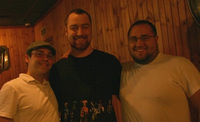

About FireJive
FireJive was founded in July of 2004 by Brett Pilkerton, Joseph Zusi, Matthew Neyssen. It was originally known as the CT Poi group, back when Yahoo Groups were the way to keep track of your social circles.
The group moved throughout Connecticut over the years. Meeting regularly at the New Haven Green, the Middletown Market parking lot, and the New Haven Rec Center, the group honed their skills and grew together as a performance troupe.
It didn't take long for fire performers from other areas to take notice. People from Rhode Island, Massachusetts, and New Hampshire all spent some amount of time as members.
The group eventually decided to galvanize its status as an official organization. We even got t-shirts! Now here we are, ready to make your event more memorable.